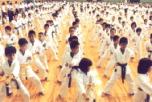

a_leoncito_boca_cerrada.gifa_leoncito_boca_abierta.gifa_kanji_dibujito_1.gifa_el_karate_y_el_ninio_campana.jpgContrariamente a lo que muchos suponen de la práctica del Karate-do en los niños no provoca en ellos violencia ni lesiones de ninguna naturaleza. El niño aprende desde un principio a controlar el aspecto técnico y muscular y la faz agresiva y las clases se desarrollan en un marco sano de compaerismo y respeto mutuo.
Por otro lado está
a_kanji_dibujito_2.gifcomprobado científicamente que la práctica de esta disciplina actuó en el niño con un eficaz y natural método para afianzar una sana personalidad.
En síntesis, el Karate-do le brindar al niño:
Un eficaz sistema de defensa personal. Coordinación psicomotriz. Destreza, reflejos y capacidad de reacción Descarga energética Deshinibicin Disciplina Concentración Desarrollo intuitivo Dominio de s mismo Voluntad y f inquebrantables Humildad y tolerancia Responsabilidad Recreatividad Sentido de camaradería y respeto hacia sus compaeros y profesores y por extensión, hacia su familia y hacia la sociedad.
a_chicos_aprendiendo_en_la_escuela_libro.jpg
Y un niño apto física, psíquica y espiritualmente es un niño feliz, preparado para enfrentar la vida y triunfar en ella.